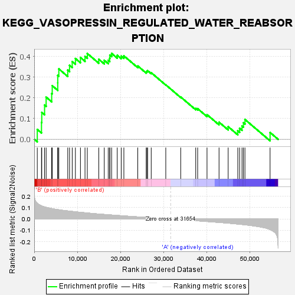
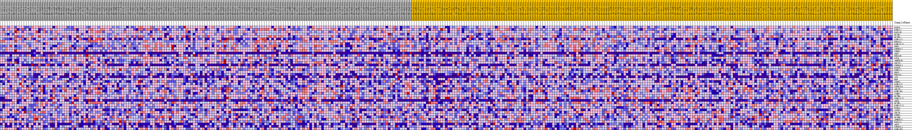
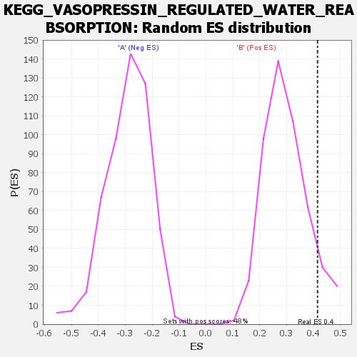

| | | Dataset | my.my.cls#B_versus_A.my.cls#B_versus_A_repos |
| Phenotype | my.cls#B_versus_A_repos |
| Upregulated in class | B |
| GeneSet | KEGG_VASOPRESSIN_REGULATED_WATER_REABSORPTION |
| Enrichment Score (ES) | 0.4147702 |
| Normalized Enrichment Score (NES) | 1.3981946 |
| Nominal p-value | 0.087318085 |
| FDR q-value | 0.5130534 |
| FWER p-Value | 0.869 |
Table: GSEA Results Summary

Fig 1: Enrichment plot: KEGG_VASOPRESSIN_REGULATED_WATER_REABSORPTION
Profile of the Running ES Score & Positions of GeneSet Members on the Rank Ordered List
| SYMBOL | TITLE | RANK IN GENE LIST | RANK METRIC SCORE | RUNNING ES | CORE ENRICHMENT | | 1 | RAB5C | na | 710 | 0.138 | 0.0476 | Yes |
| 2 | DYNLL2 | na | 1688 | 0.116 | 0.0810 | Yes |
| 3 | RAB11B | na | 1750 | 0.115 | 0.1302 | Yes |
| 4 | DCTN2 | na | 2403 | 0.107 | 0.1653 | Yes |
| 5 | DCTN5 | na | 2766 | 0.103 | 0.2038 | Yes |
| 6 | DYNC1I1 | na | 4055 | 0.092 | 0.2212 | Yes |
| 7 | PRKACA | na | 4181 | 0.091 | 0.2588 | Yes |
| 8 | DYNC1LI1 | na | 5459 | 0.083 | 0.2725 | Yes |
| 9 | PRKX | na | 5463 | 0.083 | 0.3086 | Yes |
| 10 | CREB3L2 | na | 5711 | 0.081 | 0.3398 | Yes |
| 11 | CREB1 | na | 7786 | 0.071 | 0.3343 | Yes |
| 12 | AQP2 | na | 8201 | 0.069 | 0.3572 | Yes |
| 13 | PRKACB | na | 8823 | 0.067 | 0.3754 | Yes |
| 14 | STX4 | na | 9560 | 0.064 | 0.3901 | Yes |
| 15 | ARHGDIB | na | 10734 | 0.059 | 0.3951 | Yes |
| 16 | ADCY3 | na | 11792 | 0.055 | 0.4005 | Yes |
| 17 | CREB3L3 | na | 12329 | 0.053 | 0.4142 | Yes |
| 18 | RAB5B | na | 14988 | 0.044 | 0.3864 | Yes |
| 19 | DYNLL1 | na | 16262 | 0.040 | 0.3815 | Yes |
| 20 | GNAS | na | 17183 | 0.037 | 0.3815 | Yes |
| 21 | PRKACG | na | 17521 | 0.036 | 0.3915 | Yes |
| 22 | AVP | na | 17561 | 0.036 | 0.4066 | Yes |
| 23 | NSF | na | 17971 | 0.035 | 0.4148 | Yes |
| 24 | CREB5 | na | 19275 | 0.032 | 0.4055 | No |
| 25 | DYNC1I2 | na | 20197 | 0.029 | 0.4019 | No |
| 26 | CREB3L4 | na | 20816 | 0.027 | 0.4029 | No |
| 27 | ADCY9 | na | 24042 | 0.019 | 0.3542 | No |
| 28 | DYNC2H1 | na | 26003 | 0.014 | 0.3256 | No |
| 29 | VAMP2 | na | 26165 | 0.014 | 0.3287 | No |
| 30 | DCTN4 | na | 26331 | 0.013 | 0.3315 | No |
| 31 | DYNC1LI2 | na | 27163 | 0.011 | 0.3215 | No |
| 32 | AQP4 | na | 30545 | 0.003 | 0.2630 | No |
| 33 | DCTN1 | na | 34013 | -0.006 | 0.2042 | No |
| 34 | DYNC2LI1 | na | 37496 | -0.015 | 0.1490 | No |
| 35 | RAB5A | na | 37947 | -0.016 | 0.1480 | No |
| 36 | AVPR2 | na | 40121 | -0.022 | 0.1190 | No |
| 37 | ADCY6 | na | 42912 | -0.030 | 0.0827 | No |
| 38 | CREB3 | na | 45031 | -0.036 | 0.0610 | No |
| 39 | DCTN6 | na | 47264 | -0.044 | 0.0408 | No |
| 40 | ARHGDIA | na | 47683 | -0.045 | 0.0533 | No |
| 41 | RAB11A | na | 48246 | -0.048 | 0.0642 | No |
| 42 | AQP3 | na | 48570 | -0.049 | 0.0800 | No |
| 43 | CREB3L1 | na | 48926 | -0.051 | 0.0958 | No |
| 44 | DYNC1H1 | na | 54760 | -0.092 | 0.0329 | No |
Table: GSEA details [plain text format]

Fig 2: KEGG_VASOPRESSIN_REGULATED_WATER_REABSORPTION
Blue-Pink O' Gram in the Space of the Analyzed GeneSet

Fig 3: KEGG_VASOPRESSIN_REGULATED_WATER_REABSORPTION: Random ES distribution
Gene set null distribution of ES for KEGG_VASOPRESSIN_REGULATED_WATER_REABSORPTION